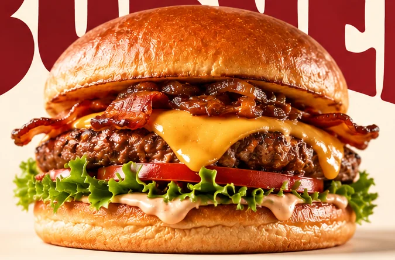

Bold flavor.
Eksplorasi visual independen, bukan foto menu resmi.
A BURGER BRAND CONCEPT

BIG BITE. BOLD FLAVOR.
01 / THE SPOTLIGHT
Satu visual. Satu fokus. Konsep Bun’Q dibangun di sekitar karakter burger yang berani, tanpa distraksi.
Visual burger di atas adalah ilustrasi konsep. Foto dan informasi produk resmi menunggu konfirmasi pemilik.
02 / THE STORY
Ini adalah area cerita brand. Narasi tentang Bun'Q akan ditulis setelah mendapat informasi langsung dari owner.
04 / SAY HELLO
Alamat, jam buka, dan nomor WhatsApp resmi menyusul. Tombol pemesanan belum diaktifkan.